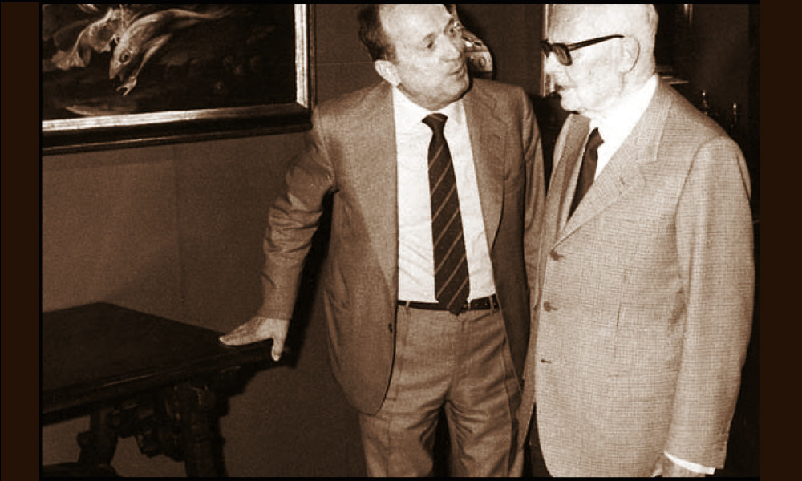

Bacarelli

- Dati biografici
- Albero familiare
- Luoghi
- Relazioni
- Bibliografia
- Opere trattate
Il fondatore della ditta antiquaria Bacarelli fu Rizieri Bacarelli (?-1947). Egli aprì una prima bottega negli anni Dieci del Novecento in Piazza Ottaviani a Firenze, dove rimase fino al 1923, anno in cui, ottenuta la licenza di mercante, aprì una prima galleria in via del Moro, poi spostata in via dei Fossi 51r.
Il figlio di Rizieri, Benvenuto Bacarelli (1923-2015), iniziò a lavorare nel settore fin dall’età giovanile, ma fu a partire dal dopoguerra che prese realmente le redini dell’attività paterna.
Benvenuto diede un nuovo impulso al commercio famigliare, ampliando la rete commerciale e di contatti grazie a numerosi viaggi negli Stati Uniti e in Inghilterra. Antiquario generalista, si dedicava tanto ai dipinti antichi quanto al mobilio.
Portò avanti l’attività nella sede di via Dei Fossi, per poi spostarsi in via della Vigna Nuova e, nel corso degli anni Ottanta, ritornò in via Dei Fossi 33, dove aprì una nuova sede. Partecipò alle più importanti fiere nazionali e internazionali e collaborò con i colleghi antiquari fiorentini.
Nell’arco della carriera strinse rapporti con Federico Zeri, Giuliano Briganti e Mina Gregori.
Nel 1990 iniziò a lavorare nella galleria anche il figlio di Benvenuto, Riccardo (1967- ), che dal 1996 gestisce l’attività famigliare. Specializzatosi in arti decorative e scultura, sempre con particolare attenzione all’arte italiana, nel 2016 l’antiquario ha spostato la galleria in via Dei Fossi 45r, nel prestigioso Palazzo della Manifattura Arte della Seta.
Altri antiquari:
Clienti:
Collaboratori:
- Federico Zeri (storico dell'arte)
- Giuliano Briganti (storico dell'arte)
- Mina Gregori (storica dell'arte)
Interviste:
- 15/02/2023, Intervista a Riccardo Bacarelli., Firenze
Vedi le opere transitate presso l’antiquario documentate nell’archivio fotografico della Fondazione Federico Zeri: catalogo della Fondazione Zeri